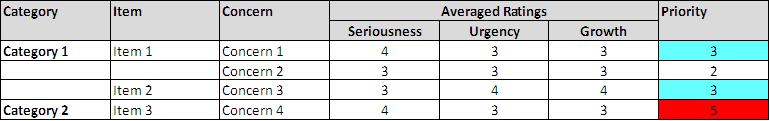

OUM |
Technique Overview |
||
Method Navigation |
Current Page Navigation |
||
|
|
||||||||
The goal of this technique is to analyze a series of concerns to determine the relative priority of each concern. It is applicable to the prioritization of a wide variety of “concerns.” It may target areas for improvement, equally it could be used to target the prioritization of strategies or initiatives, etc. The benefits of using this technique to determine the relative priority of various concerns includes:
Prioritized List of Concerns - The Prioritized List of Concerns is comprised of a list of concerns that has been ordered by priority.
No. |
Step | Component | Component Description |
|---|---|---|---|
1 |
Identify concerns to be prioritized. | Identified Concerns | The Identified Concerns is a list of concerns that have been filtered to ensure that any similar or duplicated concerns are combined, considered valid and relevant for prioritization. |
2 |
Solicit individual input. | Individual Scores | The Individual Scores are each participant's anonymous input on each concern. |
3 |
Analyze data. | Prioritized List of Concerns | The individual input is combined and analyzed and results in the Prioritized List of Concerns. |
The broad concerns that are used as a basis for the prioritization are identified. Concerns may be identified from a variety of sources, such as:
The concerns should be analyzed and concerns that are closely related or duplicated should be combined into a single concern. Similarly, concerns that are too broad may need to be split into a series of smaller concerns. The objective is to arrive at a list of concerns that have a similar size and scope.
The concerns are grouped into categories and are allocated to related items. This grouping is primarily used in the analysis of the results – if one category or item has a large proportion of high priority items, then this category should be a key candidate for further focus.
The individuals who participate in the prioritization activity are identified. The participants are likely to be comprised of the key stakeholders, subject matter experts, or decision makers that either have useful input, or who will be primarily affected by the output of the prioritization. Participants are asked to provide feedback for each of the concerns that were agreed on in the previous step. For each concern, feedback is expressed using the following criteria:
Seriousness – How serious is the concern to achieving the mission statement?
Urgency – How urgently do we need to address the concern?
Growth – How does the concern impact the long term mission if it is not addressed?
The assessments were measured using:
Note that feedback is generally not attributed to individuals. As the feedback is anonymous, it generally improves the accuracy of the data.
The input for the individual respondents should be analyzed to yield the overall priority of each concern. This could be displayed in a tabular form as shown below.

Once the data has been analyzed and the concerns have been prioritized, appropriate actions can be taken to act upon some or all of the concerns in order of their relative priority.
The following templates and tools are available to assist with this technique:
Template File Name |
Comments |
|---|---|
| MS EXCEL |
This technique is recommended for use in the following OUM tasks:
| Task | Usage |
|---|---|
| Use this technique to determine the relevant priorities of the various business strategies. |
This section is not yet available.

Copyright © 2006, 2016, Oracle and/or its affiliates. All rights reserved.